Dalle colline di Montecalvo Versiggia, i frutti genuini del lavoro delle nostre api.
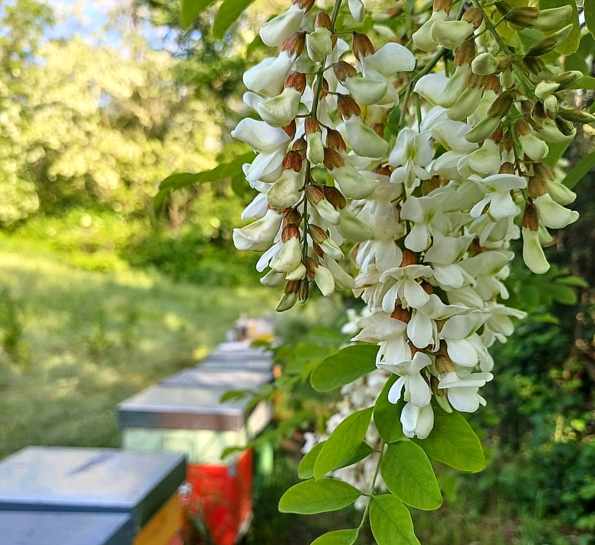
Premiato al Concorso Nazionale Tre Gocce d'Oro 2026: delicato, purissimo e cristallino.
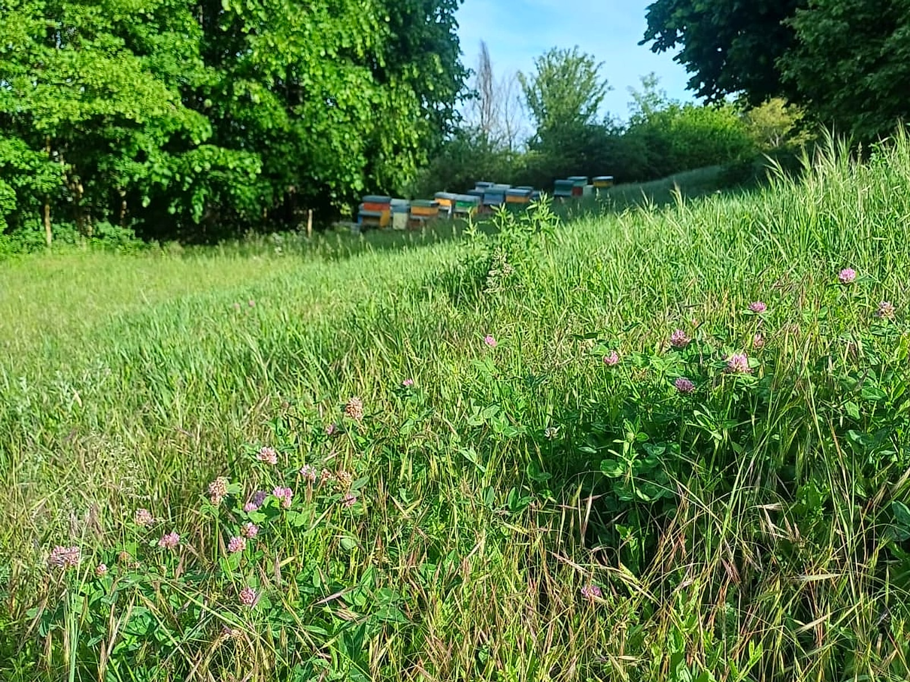
L'essenza del nostro territorio racchiusa in tre varietà stagionali: Invernale, Estivo e Autunnale.
Intenso e ambrato, con quel retrogusto amarognolo che conquista i palati più decisi.
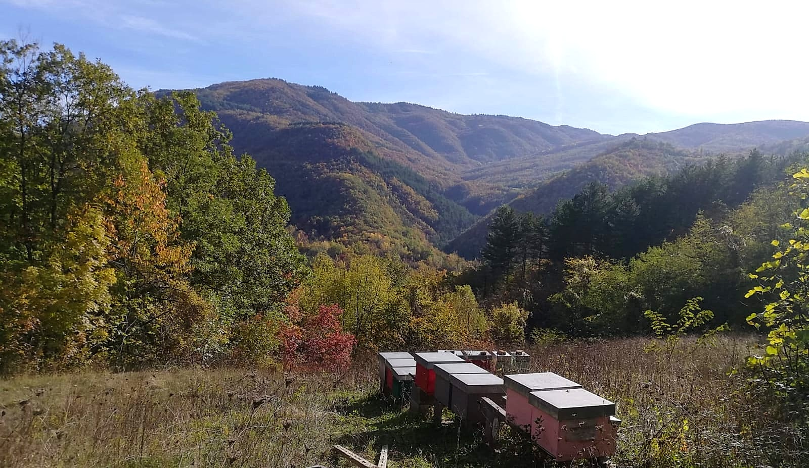
Il "miele di bosco": scuro, denso e ricchissimo di sali minerali, ideale per gli sportivi.
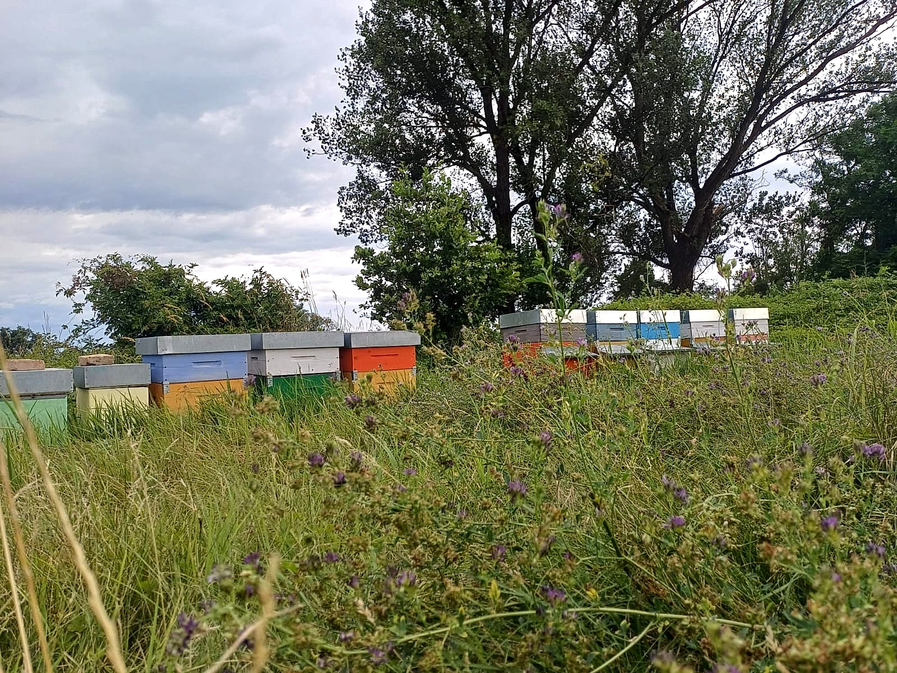
Il sapore della tradizione: delicato, con note di fieno fresco, perfetto per ogni momento.
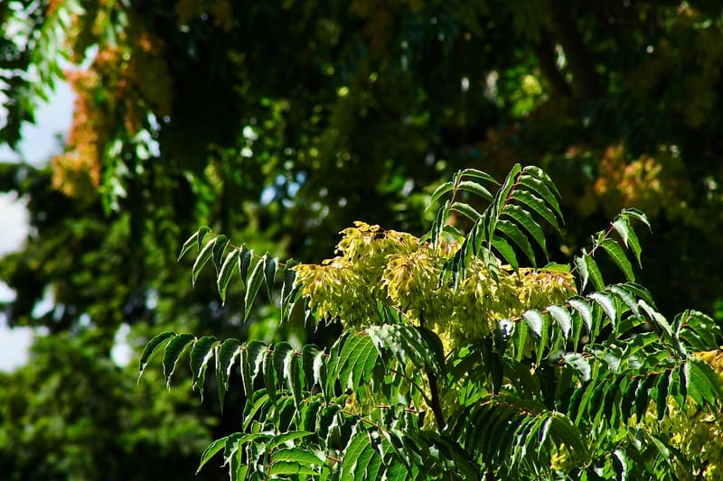
Una rarità aromatica dal profumo inconfondibile di pesca matura e uva moscata.
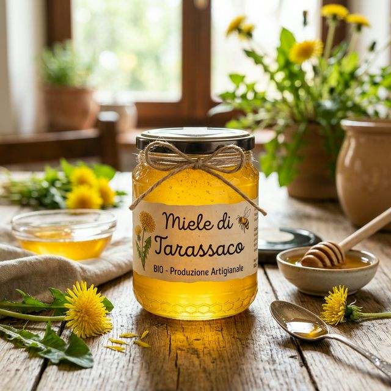
Energia pura e azione depurativa: un miele dal carattere forte e cristallizzazione cremosa.
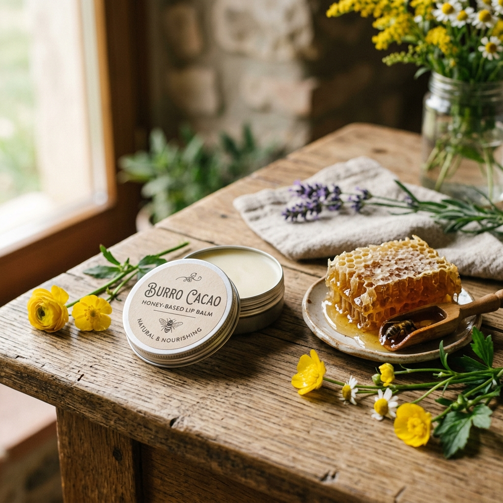
Nutre e protegge le labbra con la forza naturale della cera d'api e del miele.
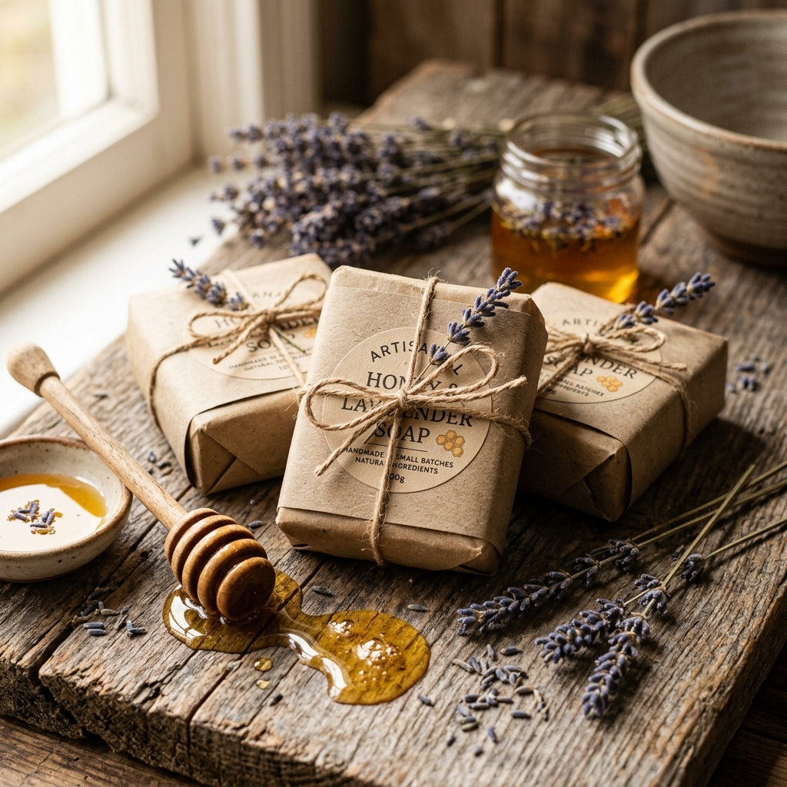
Detergenza delicata ed emolliente per una pelle sempre morbida e profumata.
Il segreto della longevità dell'ape regina: un ricostituente naturale senza pari.
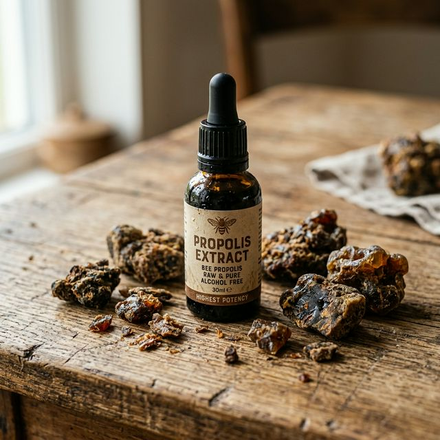
Il potente antibiotico naturale delle api, alleato prezioso contro i malanni di stagione.
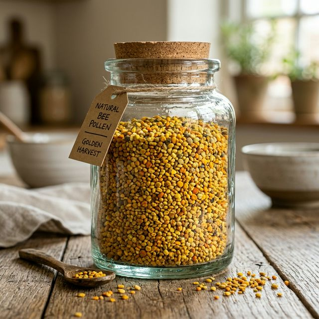
Un superfood ricolmo di proteine e vitamine, per una sferzata di energia quotidiana.
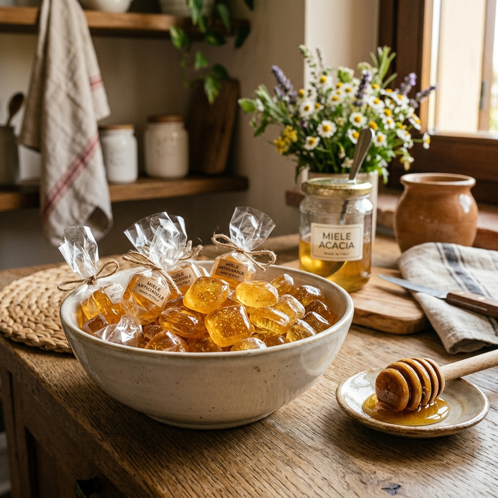
Tutta la dolcezza del nostro miele in una caramella artigianale che dona sollievo alla gola.
Atmosfera e profumo di alveare: pura cera d'api per illuminare i tuoi momenti speciali.
Entra nella nostra community WhatsApp per scoprire subito quando i nuovi mieli sono pronti per l'invasettamento!
Per qualsiasi dolce curiosità